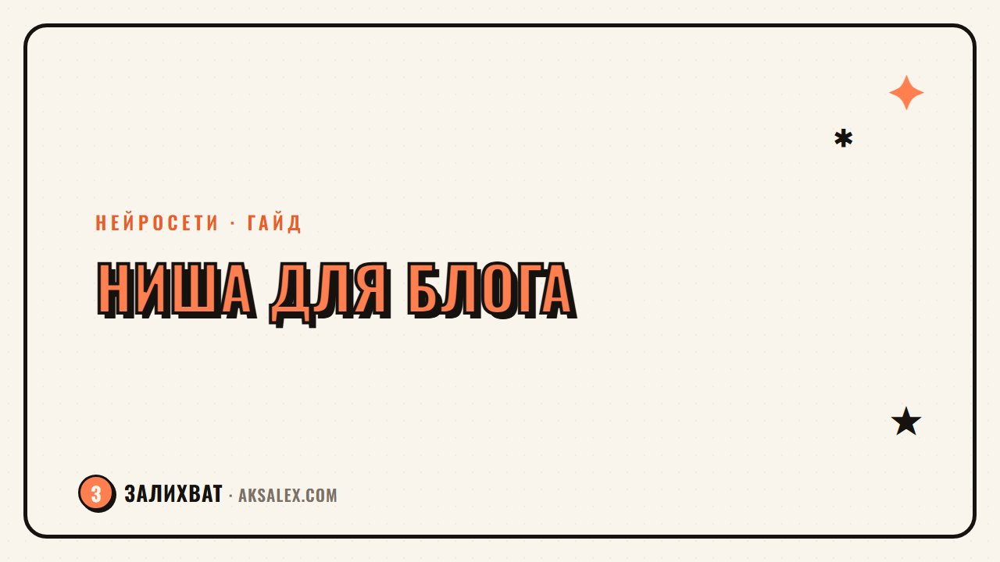

How to Choose a Niche for a Blog About Neural Networks

The topic of neural networks took off so fast that seemingly every other blogger decided to write about it. Now beginners assume the niche is already taken and it's too late to jump in. That's not true - the market is huge, but choosing a specific direction determines half of a blog's success. Let's break down how to find your own niche instead of copying someone else's.
Why the broad topic "neural networks" doesn't work
If you start a blog described as "I write about neural networks," your audience won't understand why they should follow you specifically. The topic is simply too broad: it covers image generation, text, video, business automation, AI product development, and dozens of other directions.
A broad topic works well for a news channel with a big team. For a personal blog, it turns into a mess: today a post about Midjourney, tomorrow about neural networks in marketing, the day after about AI ethics. Readers won't understand why they should keep following such a blog past the first week.
A niche isn't a topic - it's a specific problem faced by a specific person that you solve on a regular basis.
Criteria for choosing a niche
Before settling on a direction, check it against a few parameters. This will filter out ideas that sound interesting but aren't actually viable.
- Personal experience - you actually use these tools yourself, not just read about them in someone else's articles
- Demand - people are genuinely searching for a solution to this problem, not just casually interested in the topic
- Competition - there are players in the niche, but no monopolists who've claimed the entire audience
- Monetization - it's clear how to earn: courses, consultations, affiliate programs, advertising
- Longevity - the topic won't vanish in six months along with the trend
If an idea passes at least four out of five points, it's worth trying. If only two or three - the niche's framing needs more work.
Narrow the topic down to a format, audience, and outcome
A working niche formula looks like this: tool or technology plus audience plus the result they get. For example, not "neural networks for text," but "ChatGPT for copywriters who want to write articles twice as fast."
Examples of specific niches
- Neural networks for small business - automating client correspondence and processing inquiries
- AI tools for designers - speeding up the creation of layouts and mockups
- Neural networks in SMM - content plans and social media posts without burnout
- AI for tutors and teachers - creating tests and study guides
- Neural networks for video - editing and voiceover for videos without a studio
The more specific the framing, the easier it is to write headlines, come up with post topics, and explain to people why they should follow you.
How to test a niche before launching
You don't need to spend months on analysis - a few simple checks that take a couple of evenings are enough.
| Testing method | What to look at |
|---|---|
| Search autocomplete | Type the start of a query about neural networks and check the autofill suggestions |
| Comments on other blogs | What questions readers ask under similar posts |
| Niche chats and forums | What problems people discuss most often |
| Competitors | How many blogs already cover the narrow topic and what their reach looks like |
| Test posts | Publish 3-5 posts on the topic and gauge reactions before a full launch |
If your test posts get zero reaction at all, the reason isn't always the niche itself. Sometimes it's the presentation or the headlines. But if the silence repeats across different platforms, that's a signal to reconsider your direction.
Mistakes when choosing a niche
There are a few typical traps beginners fall into at the start.
- Choosing a niche just because it's trendy, without any personal interest in the topic
- Copying a successful blogger's format one-to-one without your own spin
- Picking too narrow a niche where you run out of post ideas within a month
- Betting on a single tool that might get shut down or change its access terms tomorrow
- Refusing to change niches even after six months of no growth or engagement
It's normal to adjust your niche a couple of months after launch. The first version is rarely final - and that's not a failure, it's part of the process.
What to do after choosing a niche
Once you've settled on a direction, the next step is to build a month's worth of content plan with posts within your chosen topic. This will show whether you have enough ideas and material for regular publishing.
At the same time, try to formulate a single sentence that explains your blog in five seconds: who it's useful for and what problem it solves. If the sentence comes out muddled or too generic, it's worth refining the niche's framing again.
Frequently Asked Questions
Can I run a blog about neural networks without a narrow niche?
You can, but only if it's a team or a large media project. For a personal blog, a narrow niche works better - it shapes a clear audience and makes promotion easier.
How do I know if a niche is already overcrowded with competitors?
If a search query returns dozens of major blogs with millions of followers and identical framing, your chances of breaking through are slim. But a narrow sub-segment within such a niche is almost always available.
Should I change my niche if there's no growth after a month?
A month is too short a period to draw conclusions. Give a direction at least three months of regular publishing before deciding to switch topics.
Do I need experience with neural networks to choose a niche in this field?
Personal experience helps a lot - you write more honestly and spot your audience's problems faster. But you can learn alongside running the blog, as long as you're honest about showing your journey.
Can I combine several niches in one blog?
At the start, it's better to focus on one so readers understand why they should subscribe. You can expand into other directions later, once your core audience is already established.
not by hand